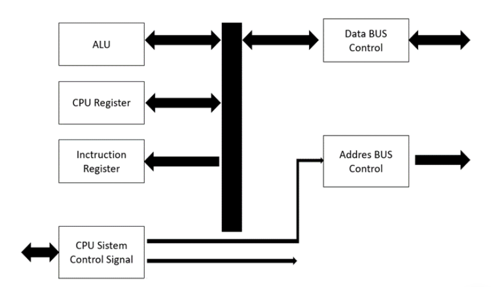
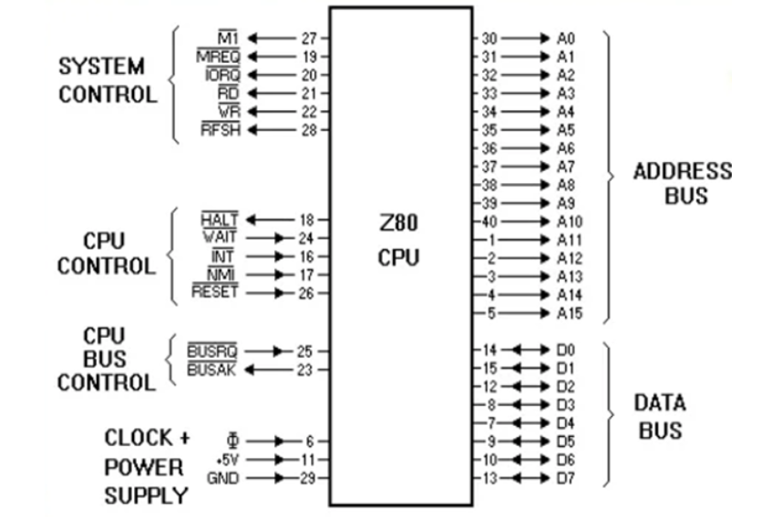

.jpg)
Gambar Diagram Rancang Bangun
Mikroprosesor Z80
Dari diagram rancang bangun mikrprosesor z80 di samping setiap bagian akan dijelaskan sebagai berikut :
MIKROPROSESOR Z80
Dalam sebuah mikroprosesor terdiri dari bagian – bagian yang satu dengan yang lain saling melengkapi dan mandukung dalam memproses serta menerjemahkan berbagai macam instruksi yang diberikan kepadanya untuk selanjutnya dikerjakan setiap menerima instruksi selanjutnya. Susunan dari bagian – bagian tersebut dikenal sebagai rancang bangun dari sebuah mikroprosesor tipe Z80 memiliki rancang bangun sebagai berikut :
Gambar Diagram Rancang Bangun
Mikroprosesor Z80
Dari diagram rancang bangun mikrprosesor z80 di samping setiap bagian akan dijelaskan sebagai berikut :
ALU (Arithmatic Logic Unit)
ALU merupakan bagian yang berfungsi untuk memproses pengolahan instruksi yang berhubungan dengan proses aritmatika dan logika. ALU juga merupakan jantung dari CPU serta di dalamnya terdapat register A yang berfungsi sebagai accumulator untuk menyimpan hasil akhir dari proses – proses tersebut. Pada bagian ini terdiri dari register – register yang dapat digunakan secara umum (general purpose register) yang dapat diakses secara langsung dan register – register yang digunakan secara khusus (spesial purpose register). Pada mikroprosesor Z80 memiliki 22 buah register yang terdiri dari 3 grup.

Instruction register berfungsi untuk menerjemahkan kode – kode biner tertentu yang masuk melalui data bus diubah menjadi instruksi – instruksi yang dapat di mengerti dan dapat diolah pada unit pengolah pusat (CPU), selanjutnya akan mengendalikan bagian – bagian terkait yang terdapat dalam mikrprosesor Z80 misalnya addres bus, data bus, control bus register – register dan lain – lain melalui CPU Control Signal System.
CPU control signal system berfungsi untuk memberikan sinyal kendali pada bagian – bagian yang terkait, sehingga seluruh kendali, baik secara hardware maupun software dapat dikendalikan melalui control signal system dengan cara memberikan suatu level sinyal logika untuk dapat mengaktifkan bagian – bagian terkait. Misalnya saluran reset diberikan logik 0 (diaktifkan), maka bagian control signal system ini akan mereset isi register PC dan isinya akan disalurkan ke saluran alamat, saluran data akan difungsikan sebagai masukan untuk dapat menerima data instruksi dari perangkat memori. Sebaliknya, jika ada instruksi yang berhubungan dengan alamat, maka isi PC akan diset sesuai dengan instruksi kemudian akan disalurkan ke saluran alamat dan dapat digunakan oleh instruksi selanjutnya.

CPU control signal system berfungsi untuk memberikan sinyal kendali pada bagian – bagian yang terkait, sehingga seluruh kendali, baik secara hardware maupun software dapat dikendalikan melalui control signal system dengan cara memberikan suatu level sinyal logika untuk dapat mengaktifkan bagian – bagian terkait. Misalnya saluran reset diberikan logik 0 (diaktifkan), maka bagian control signal system ini akan mereset isi register PC dan isinya akan disalurkan ke saluran alamat, saluran data akan difungsikan sebagai masukan untuk dapat menerima data instruksi dari perangkat memori. Sebaliknya, jika ada instruksi yang berhubungan dengan alamat, maka isi PC akan diset sesuai dengan instruksi kemudian akan disalurkan ke saluran alamat dan dapat digunakan oleh instruksi selanjutnya.
Addres Bus Control
Pada bagian ini berfungsi untuk mengendalikan saluran – saluran alamat sebanyak 16 bit unutk digunakan dalam pengelamatan perangkat – perangkat memori, perangkat input / output dan sebagainya. konfigurasi pin pada mikrprosesor Z80 chip mikroprosesor Z80 dikemas dalam berbagai tipe, unutk tipe DIP 40 (dual in line packed) memiliki konfigurasi pin seperti di bawah ini.
Fungsi masing – masing kelompok saluran sebagai berikut :
a) Addres bus, terdiri dari 16 saluran yang diberikan notasi dari A0-A15 yang merupakan saluran keluaran untuk pengelamatan memori dengan kapasitas sebanyak 65536 bytes atau 64 kb
b) Data bus, terdiri dari 8 saluran yang diberikan notasi D0-D7, berfungsi untuk saluran lalu lintas data maupun data instruksi dari mikrprosesor dan sebaliknya
c) M1, merupakan saluran sinyal kontrol keluaran yang apabila berlogika 0 menunjukkan bahwa siklus yang sedang berlangsung adalah siklus pengambilan kode operasi dalam pelaksanaan suatu instruksi.